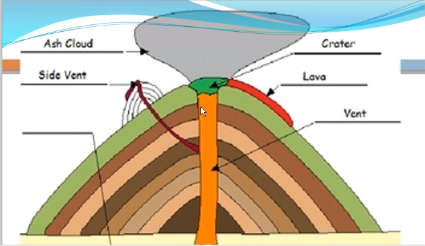

Chapter 2: Inside the Restless Earth
Aratrik Pal
April 12, 2021
Divisions
Core
- Huge in size
- Radius of 3500 km
- Inner: solid
- Outer: liquid
- Very hot temp.:
- Inner: 4700 -> 6700 C
- Outer: 3700 -> 4700 C
- Consists of:
Mantle
- 2900 km thick
- Constant movement
- Upper aka Asthenosphere
- Temp.:
- Lower: 2800 C
- Upper: 1800 C
- Consists of:
Crust
- Thinnest & Outermost
- 2 types:
- Continental:
- Below landforms
- 40km -> 100km
- 2 layers:
- Lower: made of sima and basaltic rock
- Upper: made of sial (Athenosphere)
- Oceanic:
- 1% of Earth's mass
Lava
Lava
- Lava: Molten rock that has reached the surface
- Magma: Molten rock stored in the Earth's crust
Rocks
- Parts of crust
- Formed by composition of solid aggregates of minerals in the solid state
- Minerals:
- Silicon
- Aluminium
- Iron
- Sodium
- Calcium
- Potassium
- Divided into three types:
Igneous Rocks
- Ignis = 'fire' [latin]
- Cooling and hardening of magma/lava
- aka parent rocks
- Frquently have crystals making them look glassy
- Metals obtained from them: copper, tin
- Also contain: mica, basalt, granite, feldspar
- Devil's Tower [USA] formed by Igneous Intrusion
- 2 types:
- Intrusive rocks:
- Slow cooling under ground
- Cools over 100/1000 yrs & develops large crystals
- E.g.:
- Granite
- Gabbro: used in making tombstones
- Diorite
- Peridotite
- Extrusive rocks:
- Rapid cooling of magma on surface
- E.g.:
- Pumice
- Basalt: dark grey, black
- Trachyte
- Andesite
- Rhyolite
Sedimentary Rocks
- Formed from weathering of pre-existing rocks
- Formed from tiny pieces of rocks, dead animals, plant & micro-orgs
- Takes 1000s of years to form
- Formation of sedimentary rocks:
- Rivers carry stones, gravel, ...
- Sediment settles at bootom of rivers & lakes: Sedimentation
- Layers keep on depositing
- Pressure falls on the lower layers: Compaction
- Salt in layer causes cementing
- E.g.:
- Sandstone (Red Fort)
- Shale (Tiles)
- Limestone
- Conglomerate
- Mudstone
- Compression of igneous & sedimentary under layers of soil
- E.g.: Slate, Schist, Quartzite, Marble, Gneiss
- Heat & pressure on Sedimentary / Igneous
- Limestone -> Marble
- Granite -> Gneiss
- Heat from magma & pressure from rocks above
- Shale -> Slate
- Sandstone -> Quartzite
- Slate & Quartzite used in flooring and house bases
- Metamorphosis = Process
- Classified into 2 types:
Rock Cycle
- (Igneous -> Sediment) -> Metamorphic = Rock Cycle
- Igneous -> Sediment = Weathering
- Igneous, Sediment -> Metamorphic = Heat & pressure
- Metamorphic -> Igneous = Melting
- Metamorphic -> Sediment = Weathering, Erosion